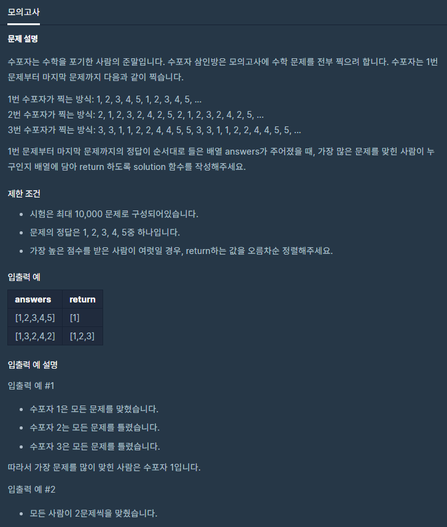

![[Level 1] 프로그래머스 완전탐색 모의고사 kotlin 풀이](/2020/02/29/programmers-mock-exam/thumbnail.png)
[Level 1] 프로그래머스 완전탐색 모의고사 kotlin 풀이
완전탐색! 프로그래머스 “모의고사” 문제를 풀어보자
문제 소개
이번 문제는 프로그래머스 사이트에 들어가서 Kotlin탭에 처음으로 나와있던 문제라서 한번 풀어보게되었어요.

수포자 3명이 문제를 찍어서 답을 내면 누가 제일 많이 맞췄나를 알려주는 문제네요.
1번 수포자는 1, 2, 3, 4, 5 순서로 번갈아서 찍고
2번 수포자는 홀수번에는 2 짝수번에는 1, 3, 4, 5로 번갈아서 찍습니다.
3번 수포자는 3, 1, 2, 4, 5를 각각 2번씩 찍습니다.
문제 풀이
수포자 배열 생성
보자마자 저는 우선 3가지를 각각 배열로 표현해봤어요.
1번 수포자는
1 | Array(answers.size) { it % 5 + 1 } |
로 간단하게 나타낼 수 있습니다.
5로 나눈 나머지에 각각 1을 더해 정답의 크기와 맞춰주는 쉬운 코드입니다.
2번 수포자는
1 | Array(answers.size) { if ((it + 1) % 2 != 0) 2 else arrayOf(1, 3, 4, 5)[it / 2 % 4] } |
이렇게 짜봤는데요.
홀수를 판별해서 2를 넣고 아닐경우 [1, 3, 4, 5]에서 꺼내가도록 했습니다.
3번 수포자는
1 | Array(answers.size) { arrayOf(3, 1, 2, 4, 5)[(Math.round((it / 2).toDouble()) % 5).toInt()] } |
Math.round((it / 2)를 하면 11 22 33 44 55 66 이런식으로 나올테니
5로나눈 나머지를 이용해서 [3, 1, 2, 4, 5]에서 가져가게 했습니다.
정답 배열과 일치하는 수 알아내기
1 | fun Array<Int>.sameSize(answer: IntArray) = |
filter를 이용하는데 index가 달린 필터를 이용해서 해당 원소가 정답 배열의 원소와 일치하면 남겨두고
우리가 필요한건 개수만 알면 되니 .size 를 이용해서 수만 반환해주었습니다.
이걸로 아까 짠 수포자 배열에 각각 적용해서 배열을 선언하였습니다.
1 | val size1 = Array(answers.size) { it % 5 + 1 }.sameSize(answers) |
정답 반환
시도 1번, 이차원 배열 이용
1 | val answer: Array<Array<Int>> = arrayOf(arrayOf(1, size1), arrayOf(2, size2), arrayOf(3, size3)).apply { |
처음에 시도해서 정답을 받은 코드인데요.
보다시피 answer이라는 배열에 [수포자번호, 맞춘 개수]를 담고 맞춘 개수를 기준으로 정렬하였습니다.
하지만 오름차순으로 정렬되니 문제를 가장 적게 맞춘 수포자 순으로 정렬되니
1 | answer.reverse() |
를 통해서 배열을 뒤집어 줍니다.
그러면 [[2, 15], [1, 5], [3, 8]]
이런식으로 정렬이 될겁니다.
저는 그 다음 조건문을 이용해서 답을 제출하려했습니다.
동점자가 나올 수 있으니 케이스를 점수에 따라 3개로 분기쳐서
- 셋 모두 점수가 같은 경우 -> [배열의 1번, 배열의 2번, 배열의 3번]
- 앞의 둘만 같은 경우 -> [배열의 1번, 배열의 2번]
- 셋다 다른 경우 -> [배열의 1번]
이런식으로 처리하는 코드를 작성했습니다.
근데 예를 들어 2, 3번이 같은경우 answer에선 reverse()를 했기 때문에 3, 2가 들어있기 떄문에 .apply{sort()}를 통해서 재정렬 해줬습니다.
다시 reverse()해도 될법한데 생각을 못했네요. ;(
다 풀고나서 다른분들 코드를 보다가 map이 생각났습니다.
그래서 재시도를 해봤죠.
시도 2번, map이용하기
사실 이번 풀이에 map만큼 적합한건 없는것 같아요.
1 | mapOf(Pair(1, size1), Pair(2, size2), Pair(3, size3)).run { |
제가 다시 짠 코드는 이러합니다.
우선 아까와 마찬가지로 미리 각 수포자들의 맞춘 개수를 각각 size1, size2, size3로 넣어뒀습니다.
그다음 filter를 통해서 this.maxBy { it.value }?.value } 즉 map에서 제일 큰 값(최고득점자)와 점수가 같은 사람만 남겼습니다.
그러면 최고득점자들만 남게됩니다.
이때 key들(수포자의 이름)을 .keys.sorted().toIntArray()를 통해서 오름차순 정렬한 후 List<Int>를 IntArray로 바꿔줍니다.
이 풀이가 더욱 깔끔한 풀이같네요!
정답 코드
처음에 제출한 코드(이차원배열)
1 | class Solution { |
다시 제출한 코드(map이용)
1 | class Solution { |
나름 간결하게 잘 풀어낸거같네요!
출처: 프로그래머스 코딩 테스트 연습, https://programmers.co.kr/learn/challenges